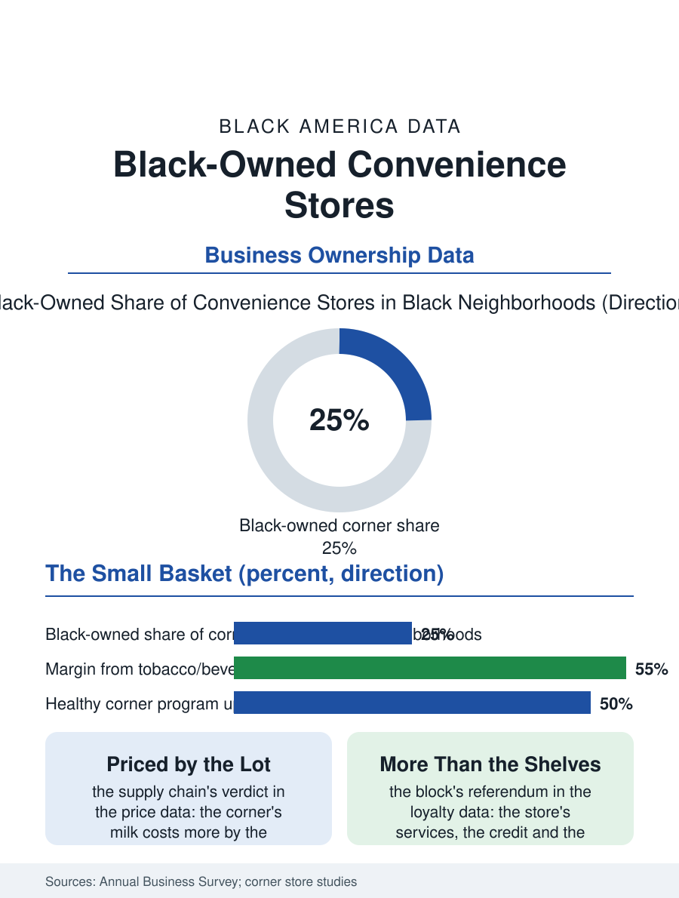

Black Business
The Block's Register: Black-Owned Convenience Stores
The smallest retail unit, priced by the lot, carrying the block's daily referendum on the ownership argument. The corner store file.

The convenience store is the neighborhood's smallest retail unit and its most contested: the corner store that sells the milk at the premium and the lottery ticket at the dream, owned in the Black neighborhoods substantially by proprietors from outside them, with the Black-owned store's share and its revival a standing subject of the corridor's economics. The business census counts the convenience stores in the tens of thousands nationally. This article reads the corner store file.
The Corner's Economics
The model's arithmetic is the small basket's: the store lives on the frequency of the small purchase, its margins in the tobacco, the beverage, and the lottery's commission, its food offering priced by the distributor's small-lot terms that make the corner's milk costlier than the supermarket's by the supply chain's design rather than the proprietor's greed, a distinction the food access file's critics and defenders argue over the same shelf. The ownership file is the corridor's sensitive one: the immigrant proprietor's store in the Black neighborhood is a fixture of the urban economy's sociology, its tensions and its daily courtesies both documented, and the Black-owned share of the segment, by the trade directories' estimates a minority of the stores in Black neighborhoods themselves, is the economic nationalism file's most concrete local datum, the target of the buy-the-block campaigns whose store acquisitions are covered as civic events. The store's services exceed its shelves in the neighborhood's accounting: the informal credit, the held package, the watched corner, the proprietor as the block's daytime witness, functions the community prices in its loyalty where it prices them at all. The EBT and the benefits calendar give the corner its own monthly rhythm in the data, the first of the month's volume standing in the register's record like a tide table, and the proprietor who staffs and stocks for the tide is practicing a local knowledge no chain's planogram holds, the neighborhood's paydays and benefit days being the small retailer's true calendar, learned at the register across the years the chain's rotating managers do not stay to learn.
Food, Fuel, and the Healthy Corner
The healthy corner store programs are the file's policy chapter: the cities' initiatives that stock the corner with the produce and the staple at the subsidized margin, their evaluations recording the offering's uptake where the price and the quality met the supermarket's standard halfway and its failure where the program stocked the shelf the neighborhood had not asked for, a design lesson the food access literature now teaches from the corner's own data. The safety file is the store's standing cost: the robbery exposure of the cash and tobacco business, the bulletproof partition that is the urban corner's architecture and its reproach, the insurance's price, compose the overhead the suburban convenience format does not carry, and the store's hours, the late night of the shift worker's necessity, are the risk's schedule as much as the market's.
The Block's Smallest Bank of Trust
The corner store file closes on the store's place in the succession of the corridor's institutions, because the corner is where the neighborhood's economy is most literally daily, and its ownership is therefore read as the block's own balance sheet made visible, a reading no other retail format carries. The chains' small-format advance and the dollar stores' deeper one are the file's competitive weather, their supply chains pricing the staple below the independent's cost in the pattern that has thinned every independent tier in the business section. The census counts the stores in the retail totals, their ownership's local detail beneath its categories. The file's last entry is the morning's first transaction, the coffee and the paper for the bus stop's regular, at the counter of the store whose name the block shortens to the owner's, the smallest unit of the ownership economy and, in the neighborhoods where the name is the community's own, the block's daily referendum on the whole argument of this section, held at the register, passing more often than the campaigns feared and less often than they promised. The prepaid phone card and the transit pass at the counter complete the store's service stack for the unbanked and the carless in one register, the corner functioning as the neighborhood's utility window in the most literal sense.
More in Black Business
Black-Owned Businesses: Counts, Receipts, and the Representation Gap
About 161,000 Black-owned employer firms and three million solo ventures: how the Census Bureau counts Black business ownership, where firms concentrate, and the gap between population share and business share.
Black Median Net Worth: The Wealth Gap in Federal Reserve Data
The Federal Reserve puts Black median family net worth at $44,900, against $285,000 for White families — about 16 cents on the dollar. The widest gap in economic data.
Black Buying Power: The $1.8 Trillion Consumer Economy
Black buying power is estimated at about $1.8 trillion — larger than the economy of most nations. What the figure measures, who produces it, and what it buys.
Source: U.S. Census Bureau, Annual Business Survey for convenience stores; healthy corner store program evaluations.